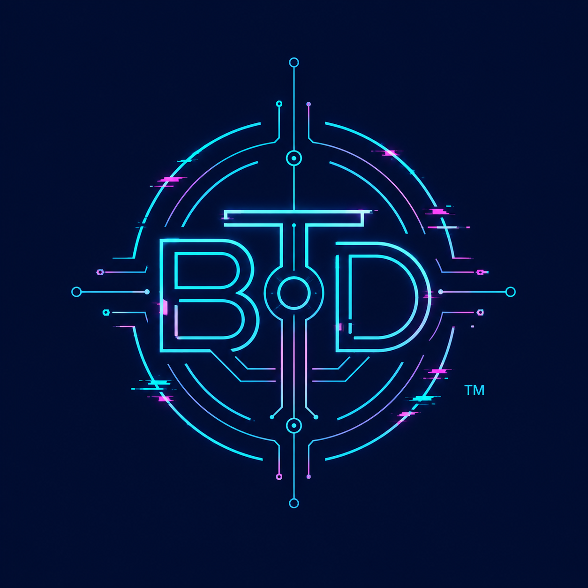
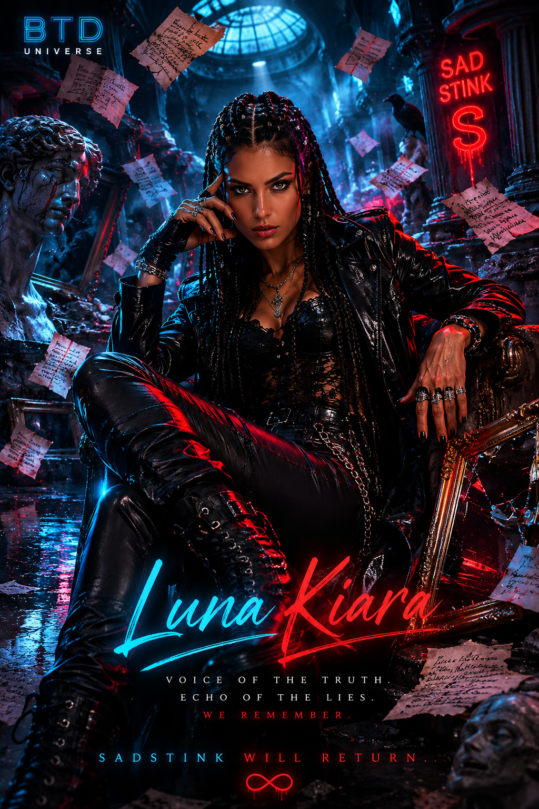

Propriedade Intelectual Registrada · Navoctoris · Lucian Lourenço
Um ecossistema narrativo onde música, literatura, audiovisual, pesquisa científica, HQ e games se encontram numa única visão criativa. Cada obra alimenta e é alimentada pelas outras.
BTD não foi planejado. Foi convocado.
De um aparente simples conto, nascido do luto e das perdas, surgiu Born to Die. E de Born to Die, como mundos que brotam de mundos, nasceu este universo.
Não há CEO aqui. Há um griô. Um artesão. Um demiurgo cujas conexões atravessam toda a sua trajetória — a ancestralidade, a memória, a dor transformada em narrativa.
O BTD cresceu de forma inevitável. Suas raízes estão em cada texto, cada perda, cada descoberta. E agora se expande como algo novo, atravessador, potente e único — um universo transmídia onde cada linguagem é um fio do mesmo tecido invisível.
Born to Die, O Tecido Invisível do Nada e Zeus-Mor são os pilares audiovisuais — mas o universo se expande por música original, literatura, pesquisa acadêmica, HQ, games e linguagem digital. Cada linguagem é uma entrada para o mesmo mundo.
As conexões do universo BTD não foram planejadas — foram descobertas. Os roteiros carregam no seu DNA conceitos de neurociência, psicologia social e simbologias que emergem de anos de pesquisa acadêmica. Não como ilustração — como substância. A memória que um personagem perde é a mesma que os estudos científicos tentam mapear. O luto que move uma narrativa é o mesmo que a psicologia social nomeia. A dor que vira música é a mesma que o ensaio acadêmico analisa.
Este universo é disruptivo porque não separa o que nunca deveria ter sido separado: arte, ciência e experiência vivida. É simbiótico porque cada linguagem alimenta as outras. E é único porque nasceu assim — não como projeto, mas como existência. Uma obra que se fez muito antes de ter nome.
Sad Stink. 60+ faixas originais. Trilha diegética do universo — rock, jazz, blues, pop. Just Gone · Museu de Mentiras · e mais.
O Fio Tênue (publicado), O Inventário das Ruínas Vivas (em revisão), Entre Algoritmos e Colonialidade (em construção). Escrita como resistência.
Três universos interconectados: Born to Die, O Tecido Invisível do Nada e Zeus-Mor. Drama, ficção científica e thriller psicológico.
Subjetividades negras, algoritmos, memória e colonialidade. Artigos em periódicos nacionais e internacionais. A academia como linguagem criativa.
Expansão do universo em quadrinhos, games e narrativas de realidade alternada (ARG). Cada plataforma é uma nova camada do mesmo mundo.
Tudo começou como conto. Depois virou roteiro de curta-metragem — prova de conceito para um longa ou minissérie. Um neuropsicólogo terminal abandona o próprio tratamento para imortalizar a história de uma jovem autodestrutiva, tentando salvá-la de um passado violento e do esquecimento absoluto.
"Passei a vida estudando a memória. Demorei a descobrir que sua verdadeira função era impedir que certas pessoas morressem duas vezes."
// Pitch ativo · Trilha original · Banda própria · Bíblia completa
Entrar no universo ↗Uma neurocientista com Alzheimer precoce descobre que uma grande corporação usa controle neural para escravizar bilhões em um loop de atenção digital. Para libertar o mundo, ela precisa abraçar o próprio esquecimento.
Acessar universo ↗Um padre cria uma IA a partir das bases emocionais e intelectuais de uma jornalista e um arquiteto nigeriano. À medida que a IA evolui, as fronteiras entre criação e criador desaparecem. Fé, consciência e o que nos torna humanos.
A Sad Stink surgiu como princípio formador do interior musical do universo BTD — e cresceu além disso. Tem seu próprio mundo, sua própria linguagem, sua própria mitologia. Não é trilha sonora de uma história: é uma história que acontece em som.
60+ faixas que atravessam rock, jazz, blues, pop e ópera — Nessun Dorma, La Traviata, Carmina Burana como pilares clássicos, ao lado de composições originais que existem no BTD e fora dele.
Ouça
@sadstinkband ↗
21 contos sobre os que vivem pela metade e ainda assim insistem. Fortaleza como pano de fundo e como ferida.
Um professor sofrendo de uma rara doença faz um inventário da própria existência e da humanidade para salvá-la de uma tragédia. Em adaptação para roteiro.
Entre as falsas ilusões do amor e a certeza silenciosa da finitude, descobrimos que a eternidade cabe no instante em que nos encaramos de verdade.
Subjetividades negras, epistemicídio e produção discursiva no contemporâneo. História · Sociologia · Análise crítica.
Homem negro, 40 anos, cabeça raspada, cavanhaque desenhado. Terno azul-marinho no início, debilitado ao fim. Enxerga na literatura a única vitória real contra a morte: a permanência na memória.
Jovem de 23 anos, traços finos, ascendência indígena e árabe. Marcas de automutilação nos pulsos. Desabrocha ao descobrir o poder acolhedor das palavras e da leitura.
Personifica a ameaça externa e o barulho violento da rua. O homem que usou as fraquezas de Helena para controlá-la — e que retorna para destruir o que Gabriel construiu.
"Como impedir que alguém desapareça completamente?"
Para pitches, co-produções audiovisuais, parcerias editoriais, musicais ou qualquer projeto do universo BTD.